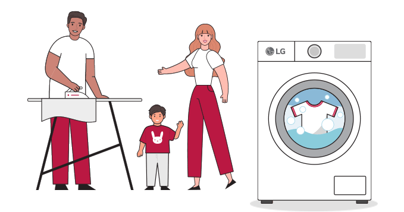

Multi Door Fridge Freezer
An appropriate choice for large households or food lovers


Good for big households or those who use the fridge often. The elevated fridge position also requires less bending down. Also known as French style/door fridges, these are increasingly popular in the UK market.
American Style Fridge Freezer
A good choice for those who
use the freezer frequently

use the freezer frequently
Fridge and freezer sections are positioned next to each other, making both easy to reach. This vertically arranged 'side-by-side' or 'double door' type fridge freezer is spacious. It offers high capacity with our largest model, and is chosen by nearly a quarter of UK households.
Tall Fridge Freezer
A sleek and practical
space-saving option


space-saving option
Fits effortlessly into smaller spaces, ideal too for prudent grocery shoppers who store smaller quantities of food. A popular, decades-long steady-seller in the UK, chosen by nearly half of households.